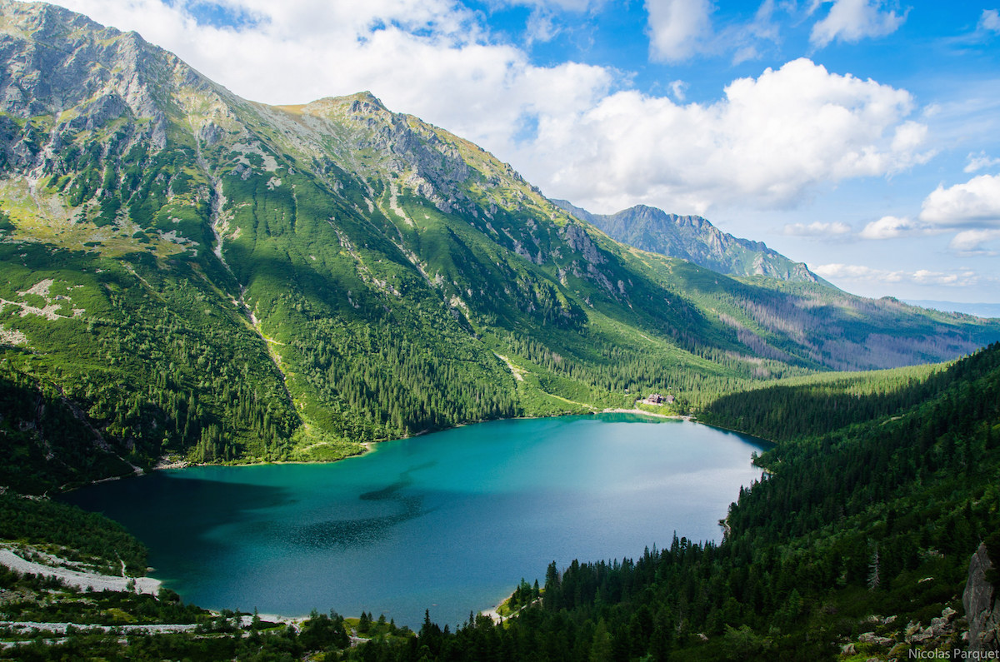
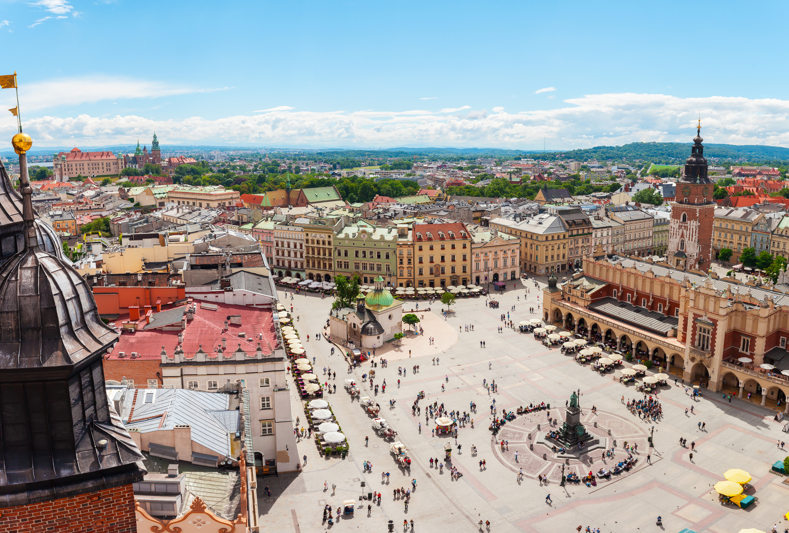
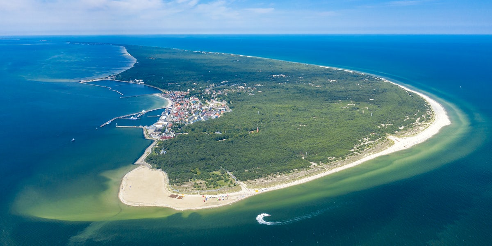
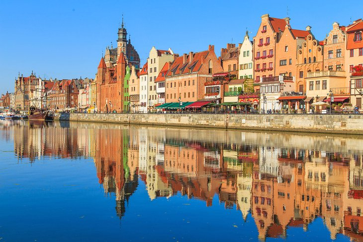
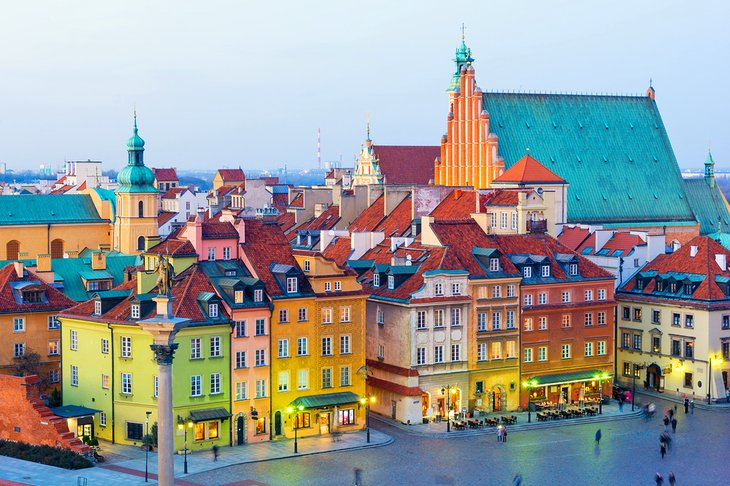
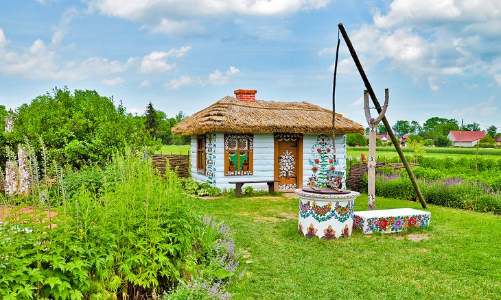
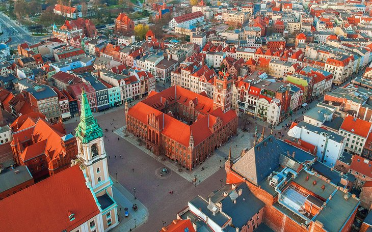
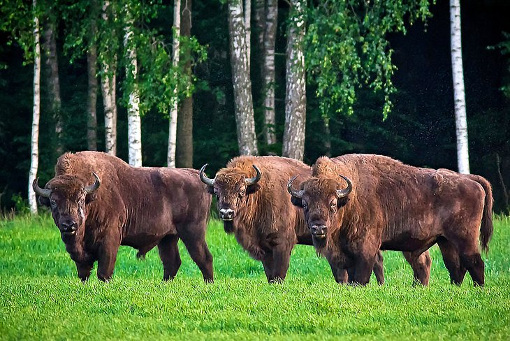
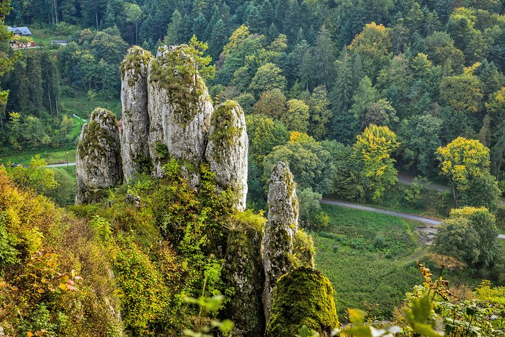
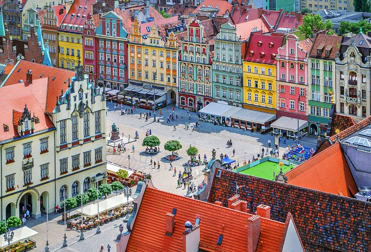

-

Zakopane
Zakopane is a town in the extreme south of Poland, in the southern part of the Podhale region at the foot of the Tatra Mountains.
-

Krakow
Kraków, also written in English as Krakow and traditionally known as Cracow, is the second-largest and one of the oldest cities in Poland.
-

Hel
Hel is a seaside resort city in Puck County, Pomeranian Voivodeship, Poland, located on the tip of the Hel Peninsula, some 33 kilometres (21 miles) from the Polish mainland.
The Kashubian village of Hel was first mentioned in 1198 as a centre of herring trade area named Gellen. In one of the Danish chronicles of 1219 it is mentioned that a damaged ship of King Valdemar II the Victorious was set ashore on an "Island of Hel".
-

Gdansk
Gdańsk is a city on the Baltic coast of northern Poland.
-

Warsaw
Warsaw, officially the Capital City of Warsaw, is the capital and largest city of Poland.
-

Zalipie Village
Zalipie is a small rural village in south-eastern Poland, in Gmina Olesno, Dąbrowa County, Lesser Poland Voivodeship.
-

Torun
Toruń is a historical city on the Vistula River in north-central Poland and a UNESCO World Heritage Site. Its population was 198,613 as of December 2020.
-

Bialowieza Forest
Białowieża Forest is one of the last and largest remaining parts of the immense primeval forest that once stretched across the European Plain.
-

Ojcow
Ojców is a village in Gmina Skała, in Kraków County, Lesser Poland Voivodeship, in southern Poland.
-

Wroclaw
Wrocław is a city in southwestern Poland and the largest city in the historical region of Silesia.
It lies on the banks of the River Oder in the Silesian Lowlands of Central Europe, roughly 350 kilometres (220 mi) from the Baltic Sea to the north and 40 kilometres (25 mi) from the Sudeten Mountains to the south. The official population of Wrocław in 2020 was 641,928, with a further 1.25 million residing in the metropolitan area.